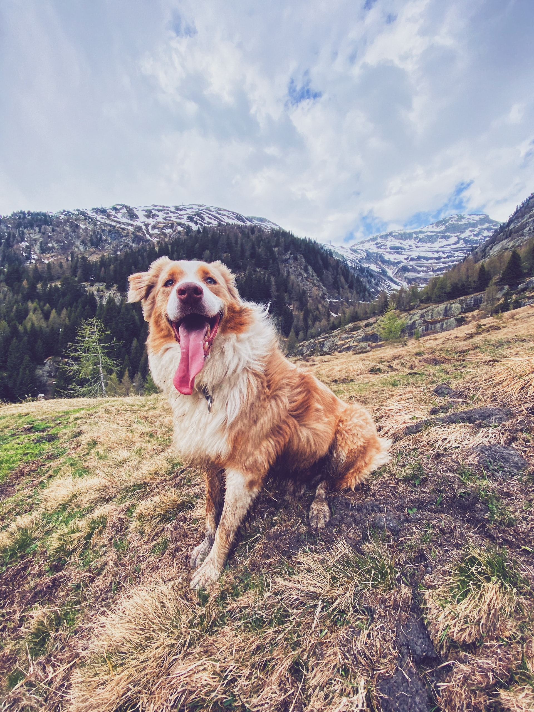
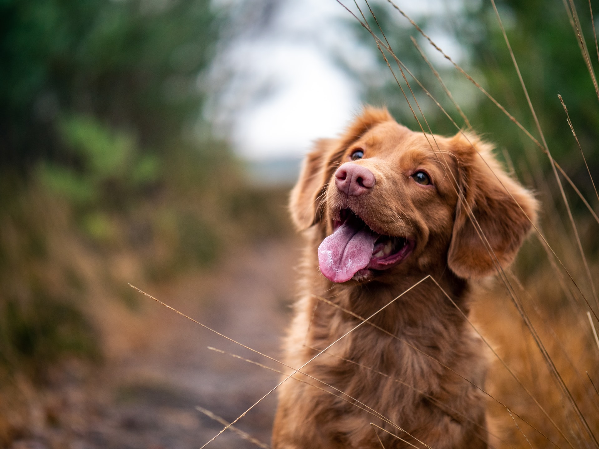
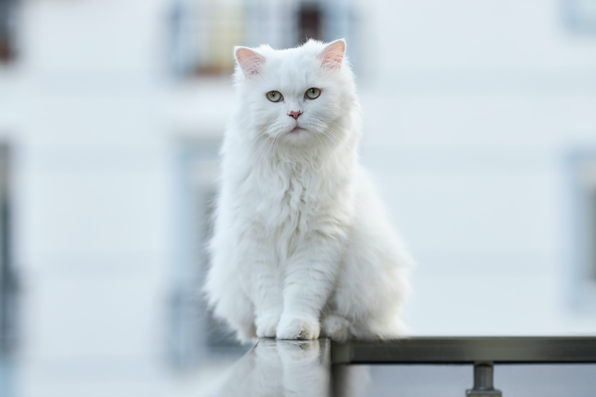
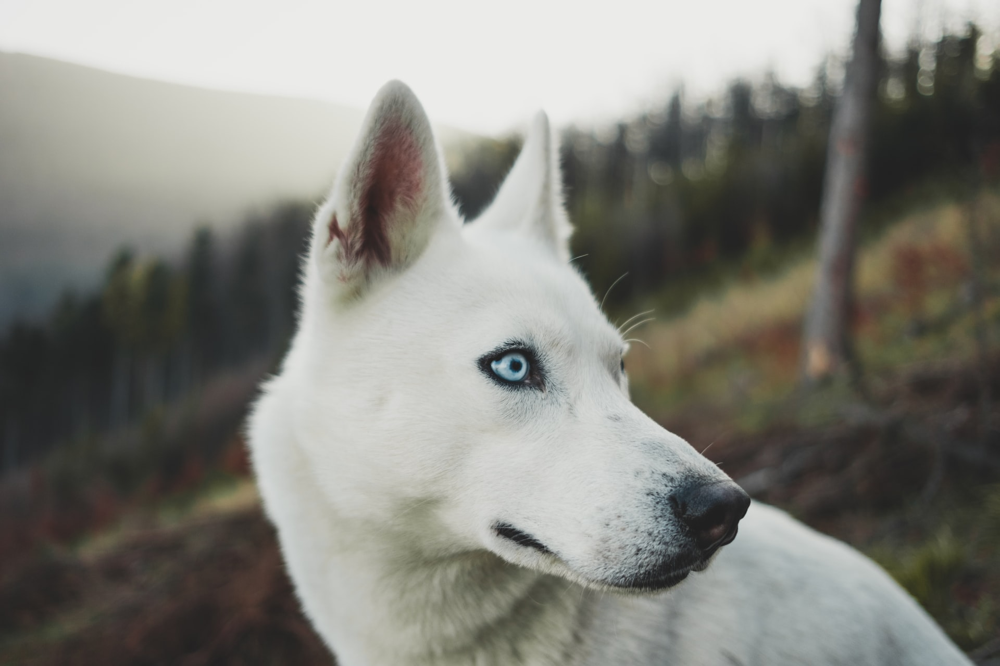
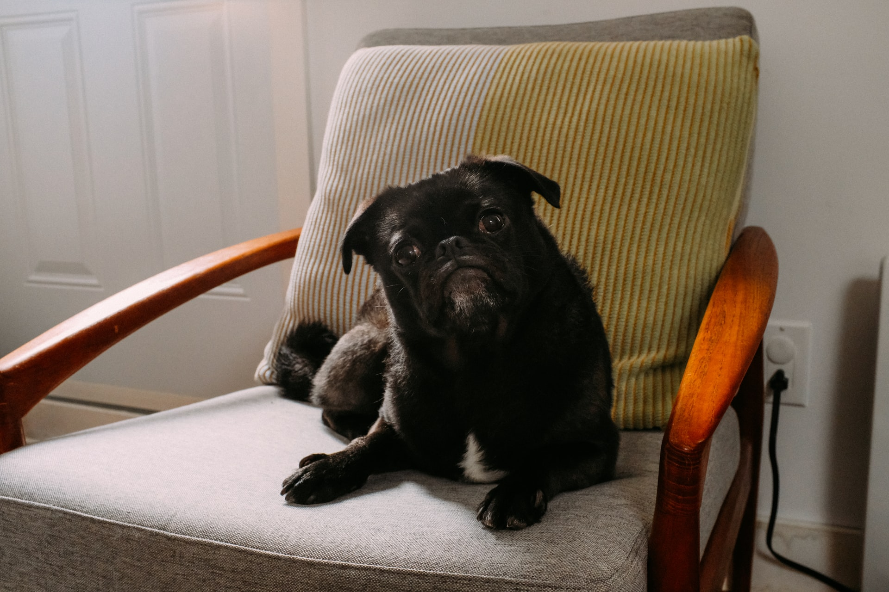

Who are we?
We are a non profitable organization that is commited to the welfare of companion animals accross the UK;
to rescue, re-habilitate and re-home pets who are unwanted and far too often neglected or mistreated and to promote responsible pet ownership through education.
Meet our friend for adoption
Jamie
Jamie has been with us for a full year now. He is very sociable, with both cats and dogs, loves long walks in nature and children. Jamie will constantly engage other pets in play.
Adopt JamieMisha
Misha is very independent and likes to spend her days in the sun. Loves treats and to snug late in the day. She's been with us for a couple of months now and comes from a city home.
Adopt MishaMarek
Shy at first but once Marek feels confident he won't let go of you. Not very treat driven and prefers to play mostly. Marek has lived in the country side mostly and is a bit scared of crowds.
Adopt MarekAmber
Amber has spend most her life in cities and loves short walks in the park as she gets tired a bit easely. She is our latest aquisition and suprisingly friendly with everyone.
Adopt Amber